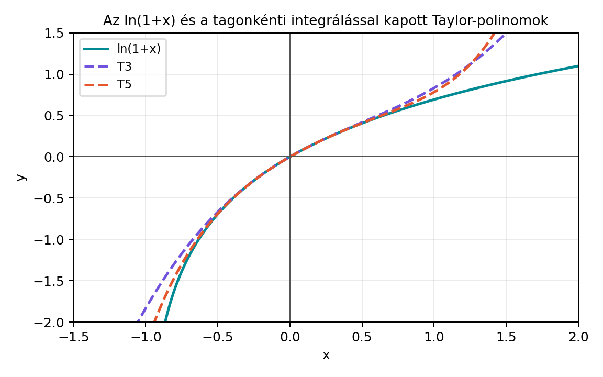

19.1 Hatványsorok deriválása és
integrálása tagonként
19.1.1 Motiváció
A hatványsorokat tekinthetjük „végtelen hosszú polinomoknak”, ezért
természetes elvárás, hogy a polinomoknál megszokott műveletek –
deriválás, integrálás – tagonként is elvégezhetők legyenek. Miért fontos
ez? Tekintsük például az
függvényt. Az integrálja
,
de ha valaki középiskolás eszközökkel próbálja meghatározni, hamar
elakad. Ugyanakkor tudjuk, hogy geometriai sorba fejtve
Ha ezt a végtelen polinomot tagonként
integrálhatnánk, rögtön megkapnánk az arctg függvény hatványsorát, és
ebből a
egy híres, lassan konvergáló, de elméletileg fontos előállítását is.
Ugyanez az eszköz adja a
sorát és az általánosított binomiális tételt
alakú függvényekre, ami a statisztikában és a pénzügyi matematikában is
előkerül.
Ebben az alfejezetben bebizonyítjuk, hogy a hatványsorok a
konvergenciakörük belsejében tagonként deriválhatók és integrálhatók,
majd ebből levezetjük a legfontosabb sorfejtéseket, és egy valós példán
alkalmazzuk őket.
19.1.2 Szemléletes kép
A tagonkénti integrálás lényege, hogy a
sorából indulva, a sor minden tagját külön integrálva megkapjuk a
logaritmus Taylor-polinomjait. Az ábrán a
grafikonja és a harmad-, illetve ötödfokú Taylor-polinomja látható.

Az ln(1+x) és a tagonkénti integrálással
kapott Taylor-polinomok - A T3(x) = x − x²/2 + x³/3, a T5(x) = x − x²/2
+ x³/3 − x⁴/4 + x⁵/5. A közelítés a 0 körül pontos, az intervallum
szélén a hiba növekszik.
A polinomok a
körül egyre jobban tapadnak a logaritmus görbéjéhez; a konvergencia
azonban csak a
intervallumon igaz, és ezt a végpontban külön kell vizsgálni.
19.1.3 A derivált sor
konvergenciasugara
Legyen
hatványsor, melynek konvergenciasugara
.
Az előző alfejezetből, a Hatványsorok és a
konvergenciasugár alapján tudjuk, hogy a sor abszolút konvergál, ha
,
és divergál, ha
.
A Cauchy–Hadamard-formula szerint
Tétel. Ha a
hatványsor konvergenciasugara
,
akkor a tagonkénti deriválással kapott
hatványsor konvergenciasugara is
.
Bizonyítás. A
és a
sor ugyanazokra az
pontokra konvergens (a második az első
-szerese),
ezért elég az utóbbi sugarát meghatározni. Ennek
-edik
együtthatója
,
és
.
Mivel
(pozitív határérték),
,
tehát a Cauchy–Hadamard-formula szerint a sugár
.
∎
Megjegyzés. A tétel azt állítja, hogy a
konvergenciasugár nem változik, de a végpontokban a
konvergencia megváltozhat. Például a
sor konvergál
-ben,
de a deriváltja
már divergál
-ben.
Ezt a példát az alfejezet végén, a Tipikus hibák 3. pontjában
részletezzük.
Tétel (hatványsor tagonkénti deriválása és
integrálása). Legyen
,
és a sor konvergenciasugara
.
Deriválás:
differenciálható a
intervallumon, és
ahol a jobb oldali sor
konvergenciasugara is
.
Integrálás:
integrálható minden
szakaszon, és
ahol az összegsor konvergenciasugara is
.
Bizonyítási terv.
Kulcsötlet: A hatványsor minden
esetén egyenletesen konvergál a
intervallumon, mert ott abszolút konvergens és a Weierstrass-kritérium
alkalmazható. A deriváláshoz a részletösszegek deriváltjainak egyenletes
konvergenciáját igazoljuk, majd a Határérték,
integrál és derivált felcserélése tételét használjuk. Az
integrálásnál ugyanez az egyenletes konvergencia elég a tagonkénti
integrálás tételéhez.
Részletes bizonyítás (deriválás).
Rögzítsünk egy
számot, amelyre
.
A
sor abszolút konvergens, mert
(a konvergenciasugár definíciója szerint). Ezért a Weierstrass-kritérium
miatt a
hatványsor egyenletesen konvergál a
intervallumon, hiszen
,
és
konvergens.
Tekintsük a részletösszegeket:
A fenti pont szerint
egyenletesen a
intervallumon.
Most vizsgáljuk a deriváltakat:
Ez a derivált sor részletösszege. Mivel
a derivált sor konvergenciasugara is
(az előző tétel szerint), ezért ugyancsak egyenletesen konvergál a
intervallumon: legyen
A Weierstrass-kritériumot a derivált
sorra alkalmazva:
,
és a
sor konvergens, mert a derivált sor abszolút konvergens
esetén.
Alkalmazzuk a Határérték, integrál és
derivált felcserélése tételét. Mivel
egyenletesen és
egyenletesen ugyanazon az intervallumon, a tétel szerint
differenciálható, és
.
Tehát
Mivel
tetszőleges volt, ez minden
pontban fennáll. ∎
Részletes bizonyítás (integrálás).
Rögzítsünk egy
pontot, amelyre
.
Legyen
olyan, hogy
;
ekkor
és
benne van a
intervallumban. Ugyanúgy, mint előbb, a hatványsor egyenletesen
konvergál ezen az intervallumon.
Az egyenletes konvergencia miatt a Határérték, integrál és derivált felcserélése
tételének integrálási változata szerint a határérték és az integrál
felcserélhető:
Itt
,
tehát
A határértéket véve kapjuk a kívánt
sort. A konvergenciasugár azonos: a
sor sugarát a
adja (mert
),
az integrált sor pedig ennek
-szerese,
így a sugara is
.
∎
Megjegyzés. A tételben az integrálást mindig a
középponttól indítjuk, mert így a hatványsor konstans tagja nem jelenik
meg külön integrálási állandóként. Ha máshonnan integrálunk, akkor az
tagot külön kell hozzáadni.
19.1.5 Számolási recept
Recept: hatványsor tagonkénti deriválása és
integrálása.
Írd fel az ismert hatványsort, például a geometriai sort
,
.
Ha integrálásra van szükséged, helyettesíts be egy olyan
kifejezést, amelynek a sorát ismered, és integrálj tagonként
-tól
-ig
(vagy a középponttól a kívánt pontig).
Ha deriválásra van szükséged, deriváld tagonként, majd szorozd vagy
oszd
-szel,
hogy a kívánt hatványkitevőt kapd.
A kapott sor konvergenciasugara általában ugyanaz, mint az eredetié,
de mindig ellenőrizd a végpontokat külön, mert ott a konvergencia
megváltozhat.
Ha a végpontban a sor konvergens, az Abel-tétel (lásd alább)
segítségével az összegfüggvény határértékeként azonosíthatod a zárt
alakot.
19.1.6 Példák tagonkénti
integrálásra és deriválásra
1. példa (ln(1+x) sora). Induljunk ki a geometriai
sorból:
Integráljuk mindkét oldalt
-tól
-ig:
A bal oldal
,
a jobb oldal pedig tagonként:
és ez érvényes
esetén. A konvergenciasugár
.
Az
végpontban a sor a váltakozó harmonikus sor:
amely a Leibniz-kritérium szerint
konvergál. Az Abel-tétel (lásd később) garantálja, hogy az összege éppen
.
Tehát
Az
végpontban a sor
,
ami divergens, ezért a konvergenciatartomány
.
2. példa (arctg x sora). Helyettesítsünk a
geometriai sorba
-et:
Integráljunk
-tól
-ig:
ismét
mellett. Az
végpontban a Leibniz-sor:
amely konvergens. Az Abel-tétel szerint
az összege
,
így kapjuk a híres
előállítást. Ez a sor gyakorlati
számításra lassú (több ezer tag kell néhány tizedesjegyhez), de elméleti
jelentősége nagy.
Az általánosított binomiális tétel tetszőleges
kitevőre adja meg az
hatványsorát. Definiáljuk az általánosított binomiális együtthatót:
Ha
,
akkor ez a szokásos binomiális együttható, és a sor véges polinom (a
konvergenciasugár
).
Ha
,
akkor a sor konvergenciasugara
.
Tétel (binomiális sor). Minden
esetén
Bizonyítási terv.
Felírunk egy differenciálegyenletet, amelyet a sor
összegfüggvénye teljesít:
,
.
Ezután megmutatjuk, hogy a
hányados deriváltja nulla, tehát
állandó. Ehhez nem kell előre tudnunk, hogy
hatványsorba fejthető: a hatványsor csak
-re
kell.
Részletes bizonyítás. Legyen
Tudjuk, hogy a sor konvergenciasugara
(ha
).
Először igazoljuk, hogy
teljesíti az
differenciálegyenletet. Most nézzük
-t.
Tagonkénti deriválással (a
intervallumon a hatványsor tagonként deriválható):
Használjuk az azonosságot:
Ennek igazolása:
Ezért
ahol
.
Most számítsuk ki
-et:
A második összegben
helyett
-et
írva:
Az
együtthatója
esetén:
amely az általánosított binomiális
azonosság. Ezt behelyettesítve:
Tehát
teljesíti a differenciálegyenletet, és
.
Legyen most
,
(itt
,
így a nevező pozitív). A hányadosszabállyal
mert
.
Így
állandó a
intervallumon (a Lagrange-középértéktétel következménye), és
,
tehát
minden
esetén. ∎
Megjegyzés. A binomiális sor az
végpontban csak bizonyos
értékekre konvergál, például
-re
az
előállítását adja, de ennek tárgyalása meghaladja a jelen alfejezet
kereteit.
19.1.8 Az Abel-tétel
A fenti példákban láttuk, hogy a sor a végpontban konvergál, de a
tételünk csak a nyílt intervallum belsejére vonatkozik. A következő
tétel hidalja át ezt a szakadékot.
Tétel (Abel). Ha a
hatványsor konvergens az
pontban, akkor az összegfüggvénye
balról folytonos
-ben,
azaz
Analóg állítás érvényes az
végpontra jobbról.
Bizonyítási vázlat. A bizonyítás a részletösszegek
Abel-féle átalakításán alapul: a
sort úgy fejezzük ki a
konvergens sor részletösszegeivel, hogy a maradéktagokra a
Cauchy-kritérium alkalmazható legyen, és
esetén a maradék egyenletesen kicsivé válik. A teljes bizonyítás a
haladó analíziskurzusok standard anyaga; itt az alkalmazásokhoz elegendő
a tétel kimondása.
Az Abel-tétel használatával igazolhatjuk a fenti végpontbeli
értékeket: a
soránál
és a sor konvergál
-ben,
ezért
Ugyanígy az arctg sornál:
### Valós életbeli alkalmazás: növekvő
járadék és geometriai eloszlás
A
sorösszegnek fontos pénzügyi és statisztikai alkalmazásai vannak.
1. Növekvő örökjáradék jelenértéke. Tegyük fel, hogy
egy befektetés az
-edik
év végén
egységnyi pénzt fizet, örökké. Az éves diszkontráta legyen
(5%), tehát a diszkonttényező
Az
-edik
év kifizetésének jelenértéke
.
A teljes jelenérték:
A 3. példa képlete szerint
Mivel
,
kapjuk:
Behelyettesítve
esetén:
Tehát egy ilyen, évente 1, 2, 3, …
egységet fizető örökjáradék jelenértéke 420 egység 5%-os diszkontráta
mellett. Ha a kifizetés nem 1-ről indul, hanem
nagyságú, akkor a jelenérték
.
2. Geometriai eloszlás várható értéke. Tegyük fel,
hogy egy teszt sikerességi valószínűsége
.
Addig ismételjük a kísérletet, amíg az első siker bekövetkezik; a
szükséges kísérletek száma legyen
.
Ekkor
geometriai eloszlású:
A várható érték definíciója:
Most
,
tehát
A 3. példából (deriválás nélkül,
közvetlenül a
képletből):
Ez a jól ismert eredmény: ha egy
esemény valószínűsége
,
akkor az első bekövetkezésig átlagosan
kísérletre van szükség.
esetén átlagosan 10 kísérlet kell.
A modell korlátai. Mindkét modell feltételezi, hogy
a diszkontráta, illetve a sikerességi valószínűség időben állandó. A
valóságban a kamatlábak változnak, a geometriai eloszlás pedig csak
független, azonos körülmények között ismételt kísérletekre érvényes.
Emellett a végtelen összegzés idealizáció; a gyakorlatban véges
időhorizonttal dolgozunk, de a végtelen sor jó közelítést ad, ha
nem túl közel van 1-hez.
19.1.9 Tipikus hibák
A derivált sor konvergenciasugarának helytelen
kiszámítása. Ha a
sorból deriválással képezzük a
sort, a konvergenciasugár ugyanaz, de csak akkor, ha az
szorzót is figyelembe vesszük a hatványsor együtthatójaként. Ha valaki
az
együtthatókat vizsgálja
helyett, téves sugár adódhat. Mindig a derivált sor tényleges
együtthatóival számoljunk.
Az integrálási konstans elhagyása. Amikor
tagonként integrálunk, például
sorát integrálva, a
-tól
-ig
történő integrálás automatikusan kezeli a konstans tagot. Ha
határozatlan integrált írunk fel, ne felejtsük el a
állandót, és a konkrét függvény azonosításához használjuk a kezdeti
feltételt (például
).
A végpontok konvergenciájának automatikus
átvitele. A tételünk csak a nyílt intervallum belsejére
garantálja a deriválhatóságot és integrálhatóságot. A végpontokban a
konvergencia megváltozhat: például a
sor konvergál
-ben,
de a deriváltja
már divergál
-ben.
A végpontokat mindig külön kell vizsgálni, esetleg az Abel-tétel
segítségével.
A binomiális sor konvergenciasugarának
félreértése. Ha
,
a binomiális sor véges polinom, és a konvergenciasugár
.
Ha
,
akkor
.
Nem szabad azt hinni, hogy a binomiális sor minden
-ra
-re
érvényes, mert
természetes szám esetén minden
-re
érvényes, de a sor akkor véges.
19.1.10 Önellenőrzés
Igaz-e, hogy ha egy hatványsor konvergenciasugara
,
akkor a tagonkénti deriválással kapott sor konvergenciasugara is
?
(Indokold.)
Írd fel az
hatványsorát a
körül. Milyen
értékekre konvergál a sor?
Hogyan kapjuk meg az
hatványsorát a
sorából?
Mennyi a
összeg?
Igaz-e, hogy a
sor deriváltja a
sor, és mindkettő konvergál
-ben?
Mondd ki az Abel-tételt, és magyarázd el, miért biztosítja, hogy a
sorának határértéke
-ben
.
19.1.11 Megoldások – Önellenőrzés –
válaszok
Igaz. A derivált sor együtthatói
,
és a Cauchy–Hadamard-formulával a konvergenciasugár
marad, mert
.
,
érvényes
esetén, és a végpontokban:
-nél
konvergens (váltakozó harmonikus sor),
-nél
divergens. Tehát a konvergenciatartomány
.
A geometriai sorból
érvényes
esetén. Tagonként integrálva
-tól
-ig:
.
Használjuk a
képletet
esetén:
.
Hamis. A derivált sor valóban
,
de míg az eredeti
konvergál
-ben
(Leibniz-sor), a derivált
divergál
-ben
(mértani sor
-nél
nem konvergál).
Az Abel-tétel szerint ha a hatványsor konvergál
-ben,
akkor az összegfüggvény balról folytonos
-ben.
Mivel a
sora konvergál
-ben,
ezért
,
és a bal oldal
.
19.1.12 Feladatok
1. feladat (A). Írd fel a
hatványsorát a
körül a geometriai sor deriválásával, és add meg a
konvergenciasugarát.
2. feladat (A). Határozd meg a
sor konvergenciasugarát és a végpontokban való konvergenciáját. Hogyan
kapcsolódik ez a sor az
függvényhez?
3. feladat (B). Vezesd le a
összegképletét a
ismert képletéből, majd add meg a
összeget.
4. feladat (B). Bizonyítsd be tagonkénti
integrálással, hogy
5. feladat (C).
Bizonyítsd be, hogy a
sor konvergenciasugara
,
ha
.
Használd a hányadoskritériumot.
6. feladat (D). Egy befektetés az
-edik
év végén
ezer forintot fizet örökké. Az éves diszkontráta
.
Mennyi a jelenérték? Ha a diszkontráta
-ra
nő, hogyan változik a jelenérték? (Használd a
képletét, és értelmezd az eredményt.)
19.1.13 Megoldások
1. feladat. Kiindulunk:
,
.
Deriválva:
A konvergenciasugár
,
mert a geometriai sor sugara is 1, és a deriválás nem változtat
rajta.
2. feladat. A sor a
sora:
.
A konvergenciasugár a deriválás/integrálás tétel szerint megegyezik a
geometriai sorának sugarával, azaz
.
A végpontokban: -
:
váltakozó harmonikus sor, konvergens (Leibniz-kritérium), összege
.
-
:
,
ami divergens. Tehát a konvergenciatartomány
.
3. feladat. Induljunk ki a
képletből. Deriváljuk mindkét oldalt:
Szorozzuk meg
-szel:
Most
esetén:
4. feladat. Az arctg
sorából:
Osszuk el
-vel:
Integráljunk tagonként
-tól
-ig:
5. feladat. Az
általánosított binomiális együttható:
Ha
,
akkor
minden
-re.
A hányadoskritériummal:
mert
.
A sor abszolút konvergens, ha
,
és divergens, ha
.
Tehát a konvergenciasugár
.
6. feladat. A jelenérték:
ahol
.
esetén:
Tehát 650 ezer forint a jelenérték. Ha
,
akkor
Azaz körülbelül 294,44 ezer forint. A
diszkontráta növekedésével a jövőbeli kifizetések jelenértéke csökken,
mert a későbbi pénzek kevésbé érnek sokat ma.